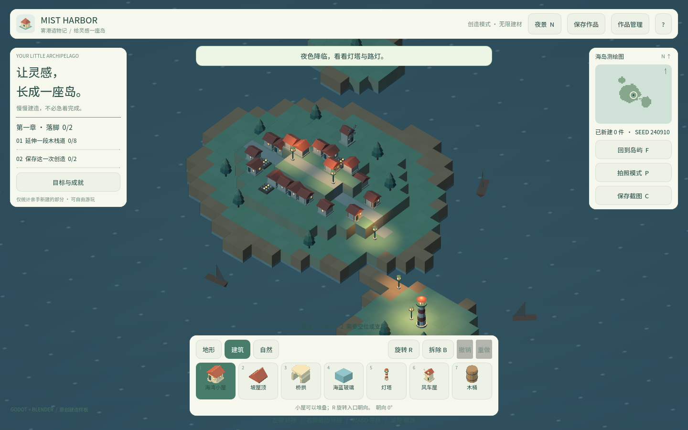
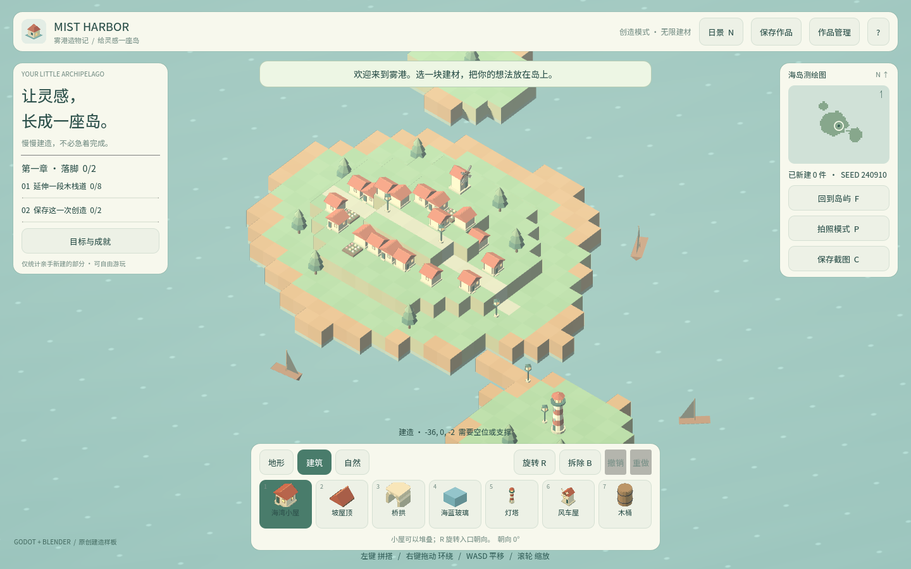

卷 7 · 第 33 章 功能取舍：决定"不做什么"比做什么更难
本章目标：用本项目的真实约束，讲清楚商业化第一原则——
范围控制。学会写一份"坚决不做清单"。
对应任务：T45 | 对应文件：project/docs/requirements.md
33.1 需求文档里的"不做"清单
requirements.md 开头就写死的几条：
| 约束 | 值 | 它挡住了什么 |
|---|---|---|
| --- | --- | --- |
| 单人、不联机 | — | 服务器的全部复杂度（同步、反作弊、运维成本） |
| 不联网 | — | 账号体系、云存档、内容分发 |
| 建材上限 | 12,000 原点 | 性能失控 |
| 世界范围 | ±25 | 无限地图的加载与序列化难题 |
| 存档上限 | ≤ 4 MB | 无限建造带来的存档膨胀 |
| 渲染 | GL Compatibility | 高端画质需求（也就保住了 Web 与老设备） |
这些不是"还没做"，是"决定不做"。 差别很大：前者是欠债，后者是设计。
33.2 为什么"不做"比"做"更重要
加一个功能 = 实现 + 测试 + 文档 + 维护 + 与它冲突的旧功能要处理| 例子 | 加了会怎样 |
|---|---|
| --- | --- |
| 联机 | 撤销栈要变成"可回滚的分布式操作"；存档要处理并发 |
| 无限地图 | 分块加载、边界处的面剔除、存档分片 |
| 高清材质 | 包体从 37 MB 涨到几百 MB，Web 首屏崩塌（第 28 章） |
📌 每一个"听起来只是加一点"的功能，都会攻击你最脆弱的那个假设。
33.3 一个可用的取舍框架：MoSCoW
| 档 | 含义 | 本项目的例子 |
|---|---|---|
| --- | --- | --- |
| Must | 没有就不成立 | 放置/拆除、地形、保存/载入 |
| Should | 很重要但可延后 | 撤销/重做、昼夜、小地图 |
| Could | 锦上添花 | 拍照、成就、章节引导 |
| Won't | 本次不做 | 联机、无限地图、高清材质、模组系统 |
关键动作：把 W 档写下来并说明理由。
不写下来，它会在第三次讨论时以"这个很简单吧"的形式复活。
33.4 用约束反推设计（本项目的三个正面案例）
| 约束 | 反过来带来的好处 |
|---|---|
| --- | --- |
| 不联网 | 存档可以只是本地 JSON → 校验简单、可导出分享（第 21 章） |
| GL Compatibility | 一套渲染管线覆盖 Web + 桌面 + 老显卡 |
| 低模纯色 | 资产 282 KB → 包体优化压力全在引擎侧，目标明确（第 28 章） |
📌 好的约束不是"少做"，是把复杂度集中到可控的地方。
33.5 什么时候该改约束
只有三种情况值得重新打开"不做清单"：
- 用户数据证明它被卡住（例如大量玩家反馈"格子不够"）
- 它挡住了核心体验（例如不联机就无法实现你真正想做的玩法）
- 成本已经变了（例如引擎新版本让某件事变便宜）
反例："我觉得加上会更好"——这不是理由，是冲动。
🌩 在云端 agent（web-cb）里是什么样
| 🖥 本地路线 | 🌩 云端 agent（web-cb） | |
|---|---|---|
| --- | --- | --- |
| 功能产出速度 | 受人手限制，天然克制 | 产出极快 → 更容易范围失控 |
| 风险 | 慢 | "Agent 一小时加五个功能"是真实风险 |
| 对策 | — | 把 W 档清单放进给 Agent 的提示词里，明确禁止项 |
| 建议 | — | 每加一个功能，同步问："它攻击了哪个既有假设？" |
🌩 AI 协作时代，"不做清单"从文档变成提示词的一部分——
这是本项目给 Agent 的边界中最有价值的一条。
33.6 常见坑速查（本章）
| 现象 | 原因 | 处理 |
|---|---|---|
| --- | --- | --- |
| 功能越加越乱 | 没有 W 档清单 | 写下来并给理由 |
| "这个很简单吧"反复出现 | 没记录为什么不做的决定 | 留下决策记录 |
| 加了功能后老功能坏 | 新功能攻击了旧假设 | 先识别假设，再动手 |
| 团队对范围理解不一致 | 只有口头约定 | 写进 requirements.md |
| Agent 加了不该加的东西 | 提示词没有边界 | 把 W 档写进提示词 |
33.7 本章作业
- 列出本项目"不做清单"里的三条，并为每条说明"如果做了会攻击什么假设"
- 用 MoSCoW 给当前项目分档，各档至少两项
- 说出三种"值得重开不做清单"的情况，并各举一个反例
- 为你自己的项目写一份 W 档清单（3 条 + 理由）
🎓 教学提示（给教师 / 直播主）
- 概念锚点：范围控制是商业化第一能力，不是"后期再考虑"。
- 课堂演示：让学员提议三个功能，现场用"它会攻击什么假设"逐个击破。
- 高频误解：学生把"还没做"和"决定不做"混为一谈。
- 讨论题：你的项目里，哪条约束带来了意外的好处？
- 批改要点：作业 1 必须指出"攻击了哪个假设"，只说"会变复杂"不给分。
🖼 本章图集


📹 录屏分镜（8 分钟）
| 时间 | 画面 | 解说词要点 |
|---|---|---|
| --- | --- | --- |
| 00:00–01:30 | requirements.md 的约束表 | "这不是欠债，是设计。" |
| 01:30–03:00 | 三个"加一点"如何引爆复杂度 | |
| 03:00–04:30 | MoSCoW 分档 | "W 档必须写下来。" |
| 04:30–06:00 | 约束反推的三个正面案例 | "约束把复杂度集中了。" |
| 06:00–08:00 | 何时改约束 + 作业 |
🎬 视频位（待录制）
把录好的视频放到course/media/video/33/（mp4 / webm / mov），重新执行 python tools/course_build.py 即会自动内嵌；首帧默认用本章第一张截图作为封面。分镜脚本见上一节。🖼 配图清单
| 文件名 | 内容 | 生成方式 |
|---|---|---|
| --- | --- | --- |
33-scope-game.png | 当前范围下的成品画面 | python tools/course_capture.py --chapter 33 |
33-night-scope.png | 夜景（范围内做到位的效果） | 同上 |
🎥 直播脚本（L3 片段，10 分钟）
- 开场："如果再给你两周，你会加什么功能？"——收集后逐个击破
- 演示：现场把 W 档写进给 Agent 的提示词，看它是否遵守
- 互动：让观众写自己的"不做清单"
- 收尾：预告发行渠道
❓ 本章 FAQ
Q：不做清单会限制创意吗？
A：恰恰相反——约束是创意的催化剂。1 格 = 1 米的约束催生了整套比例规则（第 18 章）。
Q：用户要求做 W 档功能怎么办？
A：那是"值得重开"的信号之一（用户数据）。但要用数据印证，而不是单个请求。
Q：本项目的 W 档以后会做吗？
A：取决于用户反馈；即便做，也要按第 27 章那种"每步可验收"的方式排期。